calmandoak-20). Cream blocks marked [ image ] are for Gemini once you sign off. Closes Volume One.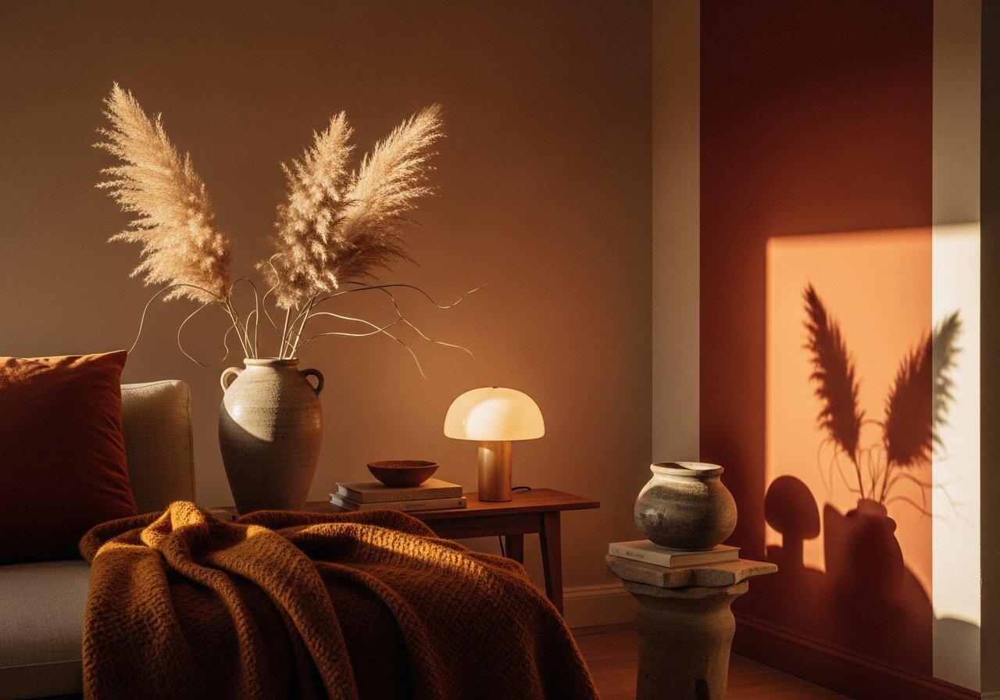
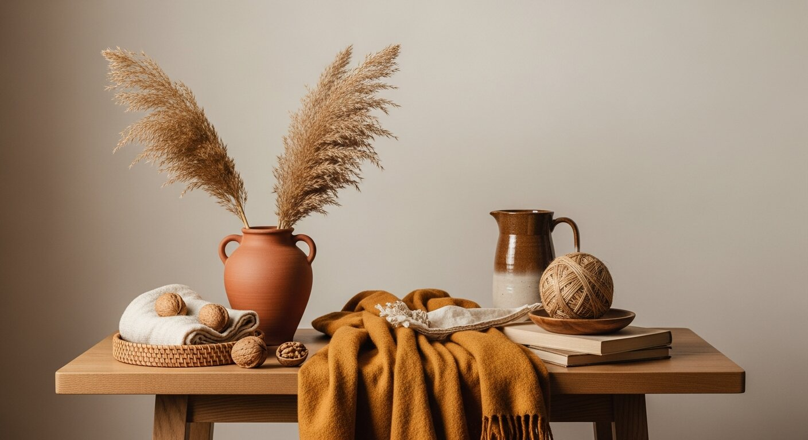
The almanac is at its most tender now. Kanro, cold dew; then sōkō, frost descends. The kō inside them read like a slow leave-taking: "wild geese return," "chrysanthemums bloom," "maple leaves and ivy turn yellow." Everything is at its most beautiful precisely because it is about to be gone.
That feeling has a name the Japanese have polished for a thousand years: mono no aware — the quiet, aching awareness that things are moving and will not stay, and that their passing is the very thing that makes them lovely. Autumn is the season that teaches it without trying.
At home, it turns us back inward. The doors that stood open all summer close; the wool comes down from the shelf; the light goes amber and low. This is hygge's true season — not the marketed candle-and-blanket version but the older instinct: to make a warm, gathered refuge against the coming dark, and to fill it, while we can, with the people and the worn, imperfect, beloved things that have lasted.
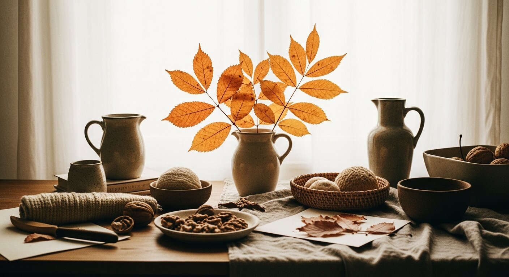
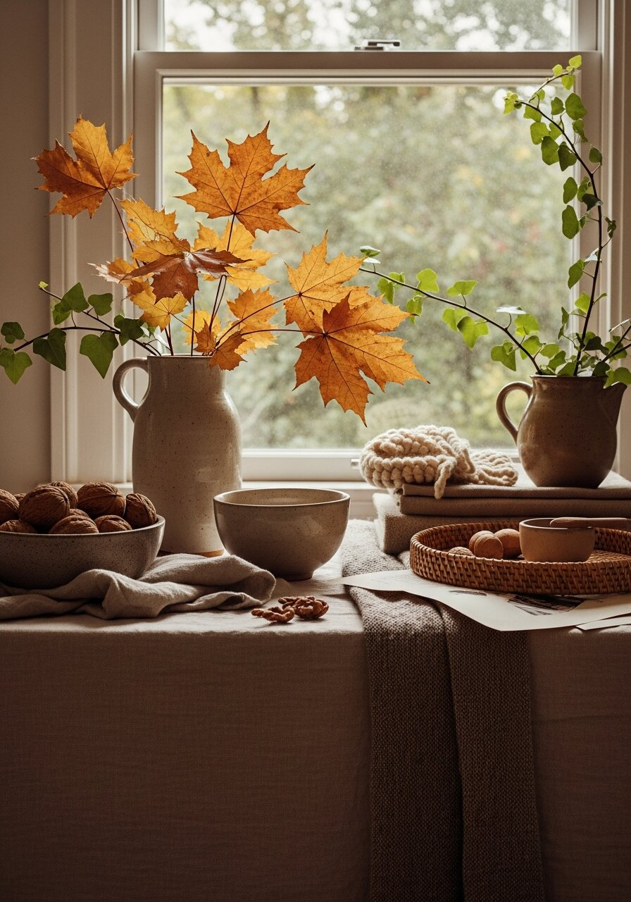
Autumn is the one season to let the warmth off its leash — a little. The single ember of the other issues becomes a small fire: terracotta and ochre allowed to spread, grounded by walnut and a deep, almost-black charcoal so the warmth reads as richness rather than noise. Even now, the rule holds — five tones, no more. The season supplies the rest.
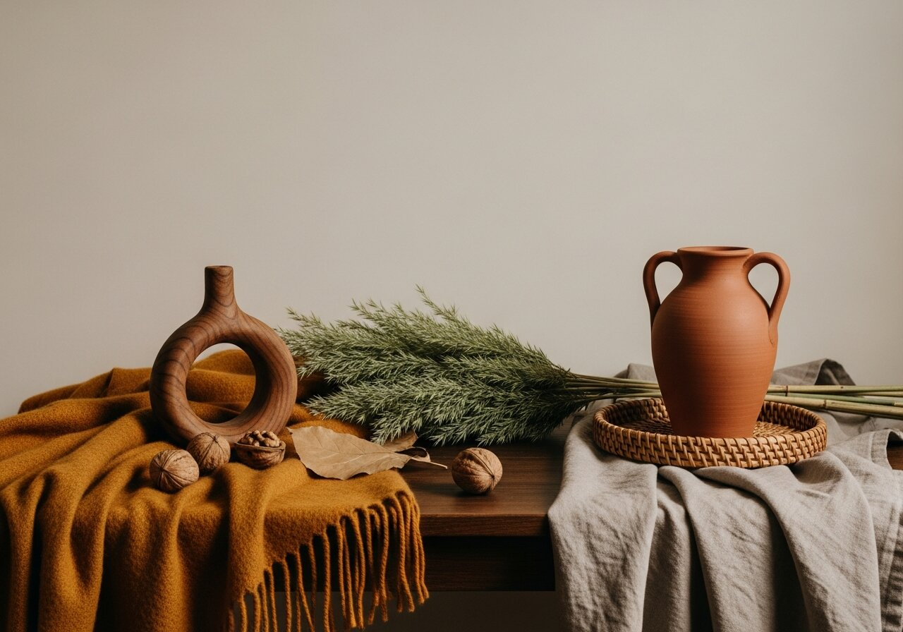
"Let the ember spread to a small fire. Then ground it in walnut and stop."
— Warm oat stays on the walls — the constant across all four seasons, a touch warmer now under the amber light.
— Ochre is the season's textile colour — a wool throw, a cushion, a runner. The first warm colour autumn lets you wear in the open, where summer would only allow a single note.
— Walnut is the gravity, and it matters most now. Dark wood is what keeps all this warmth from tipping into cosy-clutter. One walnut piece anchors a roomful of ochre.
— Dried sage is the botanical — pampas, dried grasses, seed heads, the muted green-grey of plants that have turned. Autumn's living thing is, beautifully, a dead one, kept.
— Ember is still the accent, just allowed a little more room — a terracotta vase, a band on a throw, the glow of a low lamp. Even now, two embers in one view is still one too many.
Early October — "cold dew," when the morning air first carries winter's edge. Its three kō are a study in graceful endings.
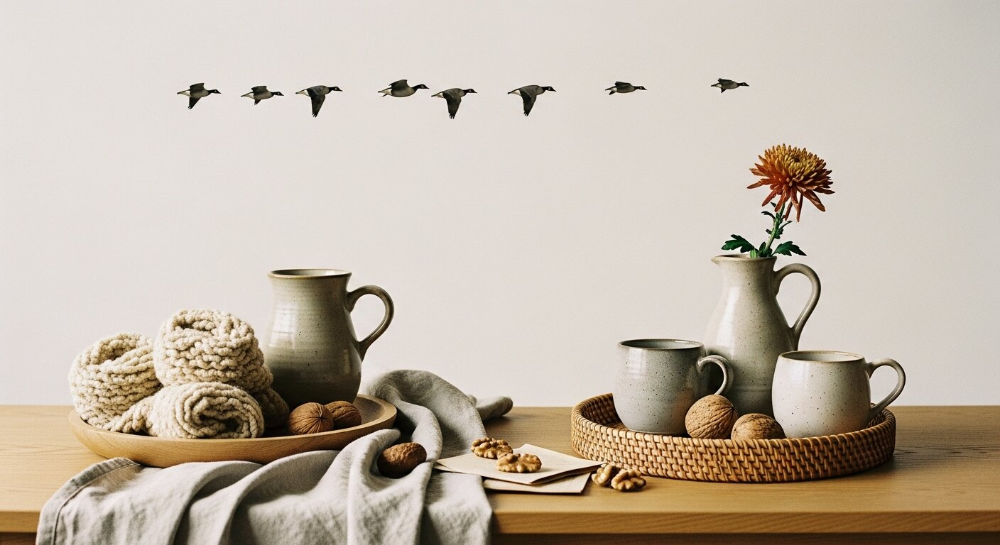
It translates, roughly, as "the pathos of things" — the gentle, bittersweet awareness that everything is passing, and that its impermanence is precisely what makes it beautiful. The cherry blossom is treasured not in spite of falling in a week but because it does. The autumn leaf is loveliest the moment before it lets go.
It is the deepest current under the whole Japandi aesthetic. It is why we prize the worn over the new, the handmade over the perfect, the dried stem over the plastic flower — because they carry time visibly, and honour the fact that nothing stays. A home built on mono no aware is not trying to look finished forever. It is trying to be beautiful now, while now is here.
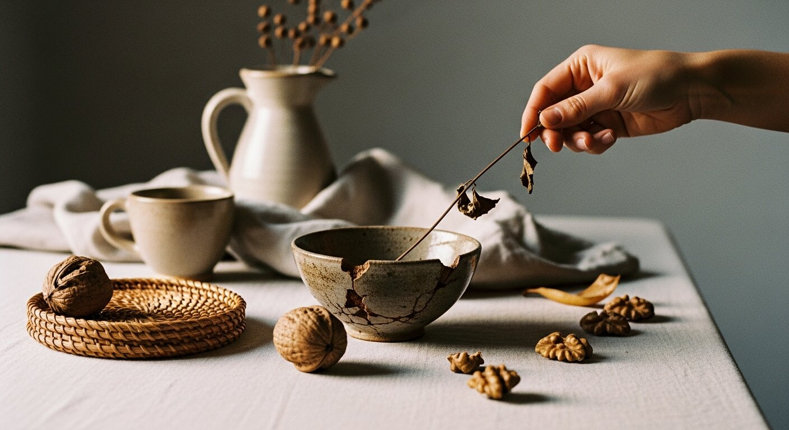
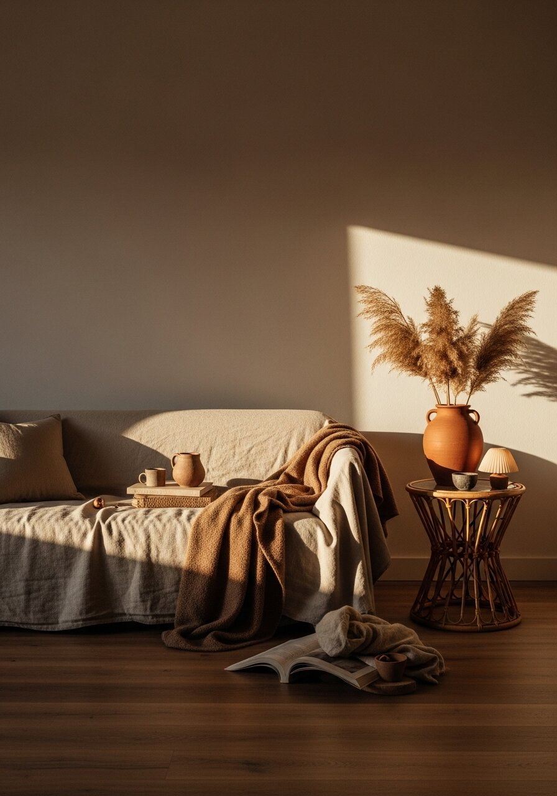
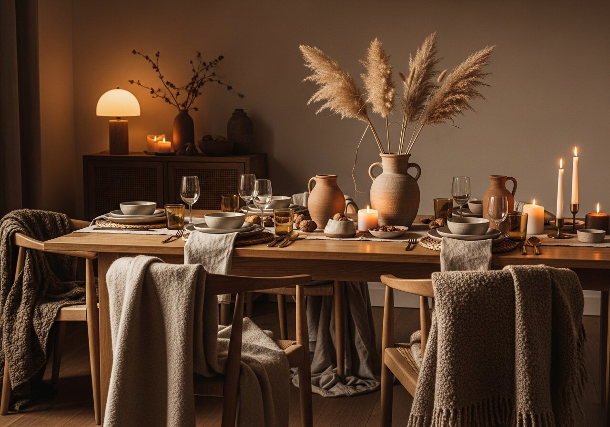
Summer's room opened outward; autumn's turns back in. Built around a warm centre — a table, a low light, the wool returned — it is a room made to hold people, and to hold the dark gently off.
Bring the wool back down first. The throws and the heavier cushions that went up for summer return now, in ochre and oat — not piled, but layered the Japandi way, two weights of the same warm tone. The bare summer floor takes its rug again. The room re-dresses for the cold the way you do.
Then lower the light and warm it. Autumn is candlelight's season — a few low flames on the table do more for a gathered room than any fixture, and the flicker is the oldest hygge there is. Keep the lamps warm and few; let pools of low amber light, not brightness, define where the evening happens.
Last, the season's botanical — and here autumn is unique. Its living thing is a kept one: dried pampas, grasses, seed heads, branches turned and preserved. Three pampas plumes in a terracotta vase are the whole gesture, and they will last the season and the next. It is mono no aware made into décor: the beauty of the plant precisely at the moment it has turned.
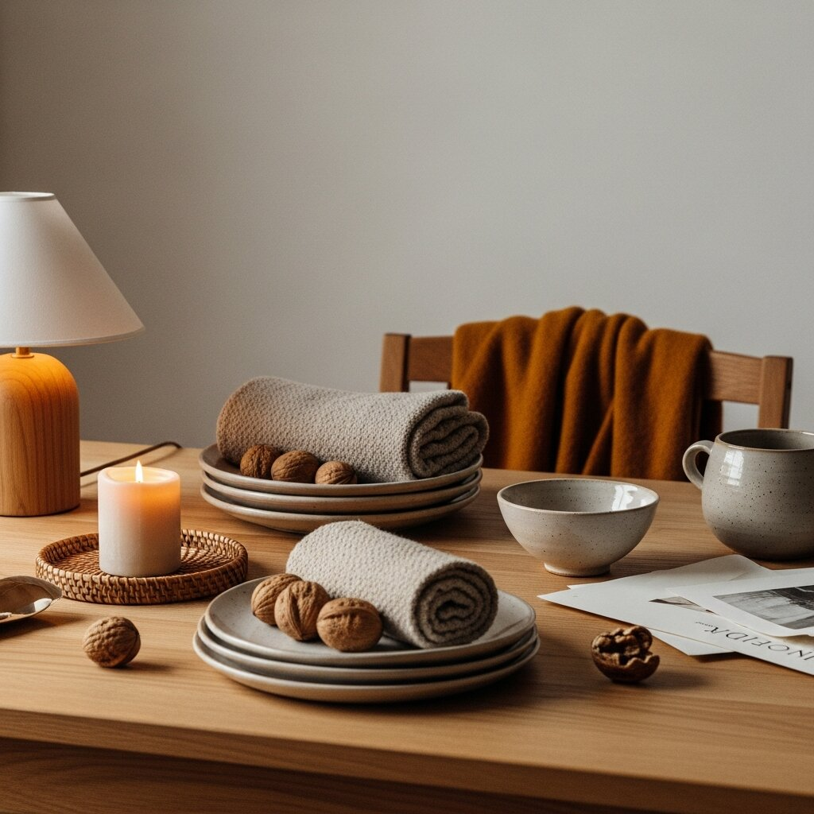
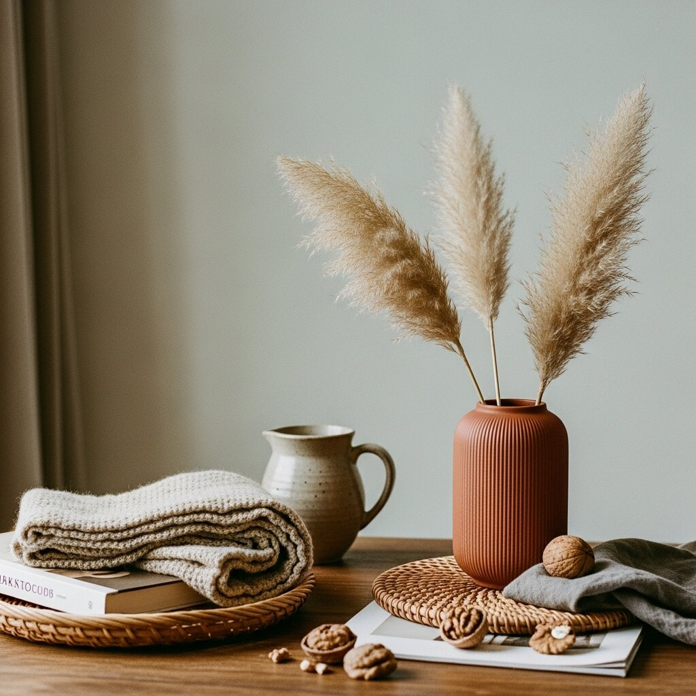
Numbered to the hero photograph. The aesthetic first, the price second.
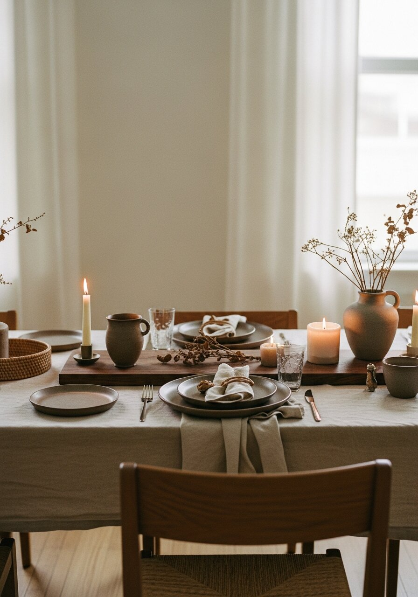
The autumn table is the heart of the season's home, and it is laid the Japandi way: warm, considered, and unfussy. Hand-thrown stoneware in earth tones, not matching china. A walnut board down the middle for bread and cheese, served from the centre. A low run of candles and a few dried stems instead of a tall arrangement, so people can see one another across the table — the one rule that matters most.
The point of the gathering is the people, so the table should disappear behind them. Nothing tall, nothing precious, nothing that says "set piece." Just warm light, good plates with the marks of the maker on them, and enough bare wood showing through that the whole thing feels generous rather than staged.
Autumn is the only season whose botanical is meant to be dried — and there is a deep rightness to it. Where summer's fresh stem celebrates the moment, the dried plume honours the turn: a grass at the exact point it has gone from green to gold, preserved there. Pampas, wheat, seed heads, branches of turned leaves — they hold the season's colour through the dark months and ask for nothing, no water, no tending. It is the most literal mono no aware a room can hold: a plant kept beautiful precisely because it has stopped growing.
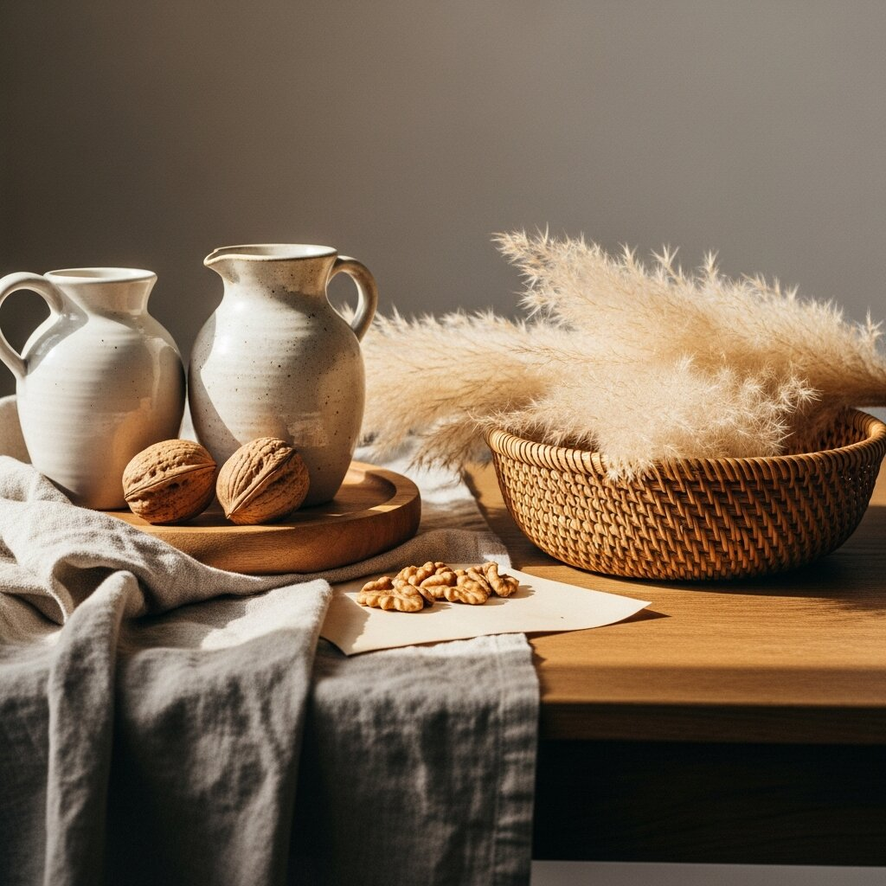
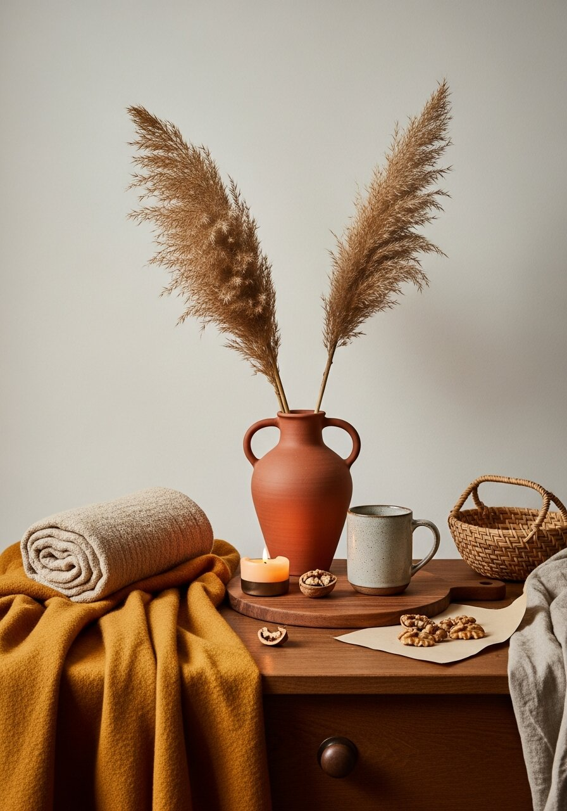
For the season of gathering in. Grouped the way an autumn home is warmed — the wool back down, the light brought low, the table laid for a few, the season's stems preserved. Each is one we'd own; the link earns a small commission, the choice earns your trust.
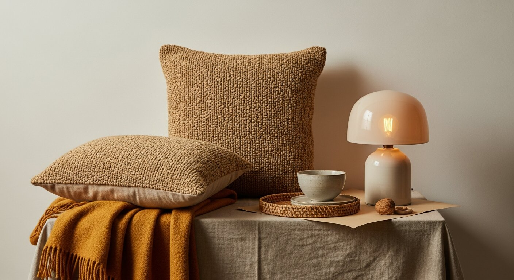
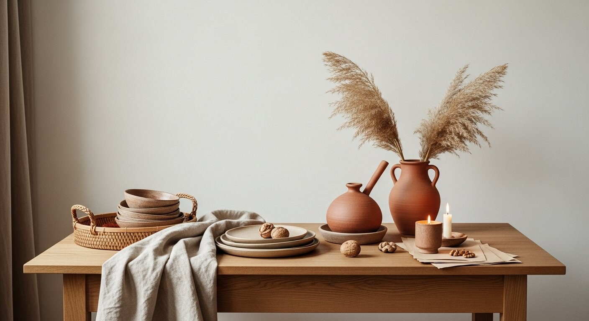
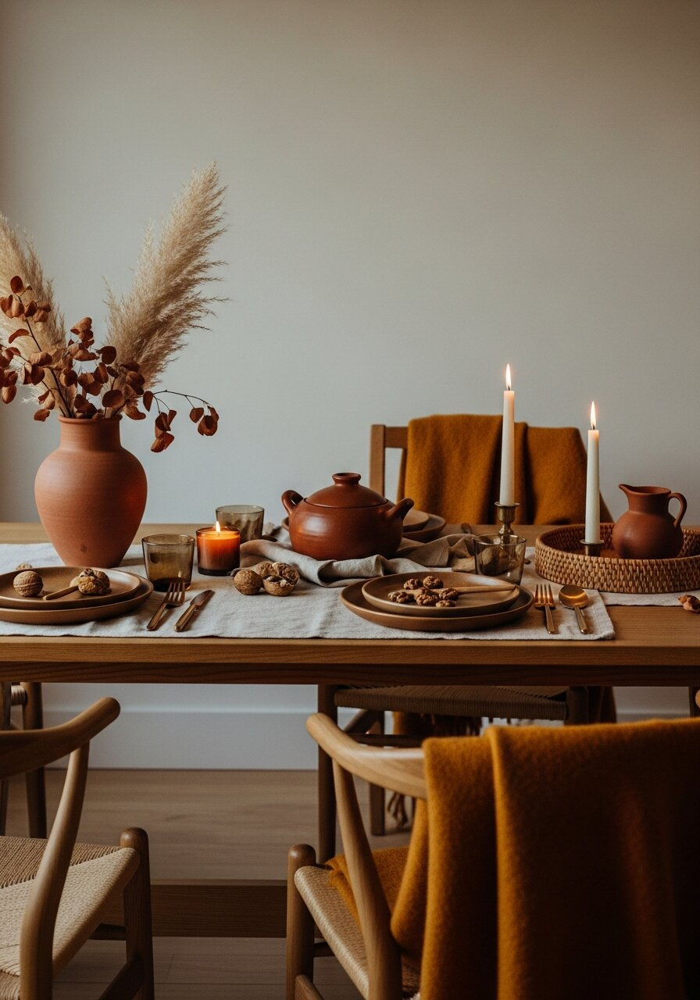
Autumn's object is the one you reach for without thinking: the wool throw over the arm of the sofa. Bought well — real wool, undyed or in an earth tone, a honest weave — it is a thing you keep for twenty years and that gets better, softer, more yours, the whole time. It is warmth you can see before you feel it, and the single fastest way to turn a summer-bare room back toward the season.
The Japandi move is restraint even here: not a pile of throws but two, layered, in the same warm family. One chunkier, one finer; one cream, one taupe. Folded over the same arm, they read as considered warmth rather than a laundry basket — comfort that has been composed.
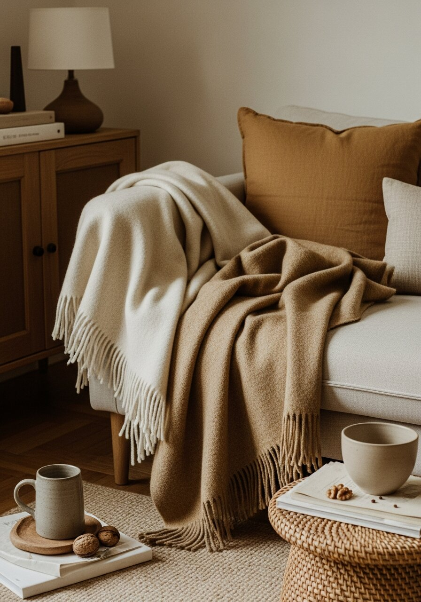
Autumn, of all the seasons, rewards buying for keeps. The wool you choose now you'll reach for every cold evening for years; the oak chairs will outlast their fashion; the dried stems will hold the season through several winters. This is the issue to spend a little more on a little less — one excellent thing, kept, over five adequate ones, replaced.
That is the deepest economy of a calm home, and the truest expression of mono no aware in a shopping list: choose the things that age beautifully, that show their years rather than hide them, and that you'll be sad to part with. Then keep them, and let them get old with you.
Two of the seven Zen principles come together in the autumn room. Wabi-sabi — the beauty of the worn, the aged, the impermanent. And fukinsei — the rightness of asymmetry, of the deliberately off-balance. Together they are the cure for the one thing that kills a calm room: the matched, the perfect, the showroom.
So buy the stoneware where no two plates are alike. Keep the bowl with the chip you remember. Hang the print off-centre, not floating in the middle of the wall. Group your objects in threes, never in symmetrical pairs. Let the wood show its grain and the linen show its creases. The aim is not mess — it is the studied, gentle irregularity of things made and used by hand, which reads as alive where perfect matching reads as bought.
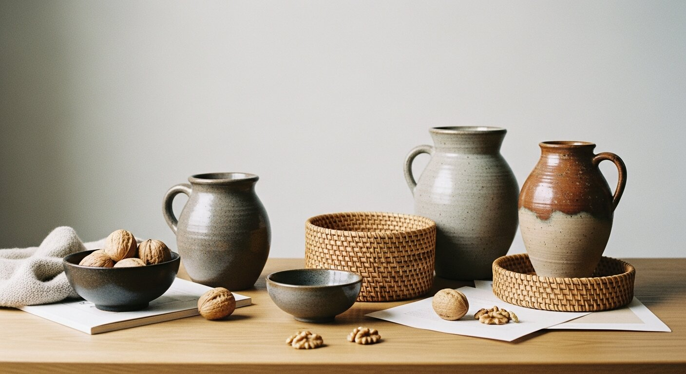
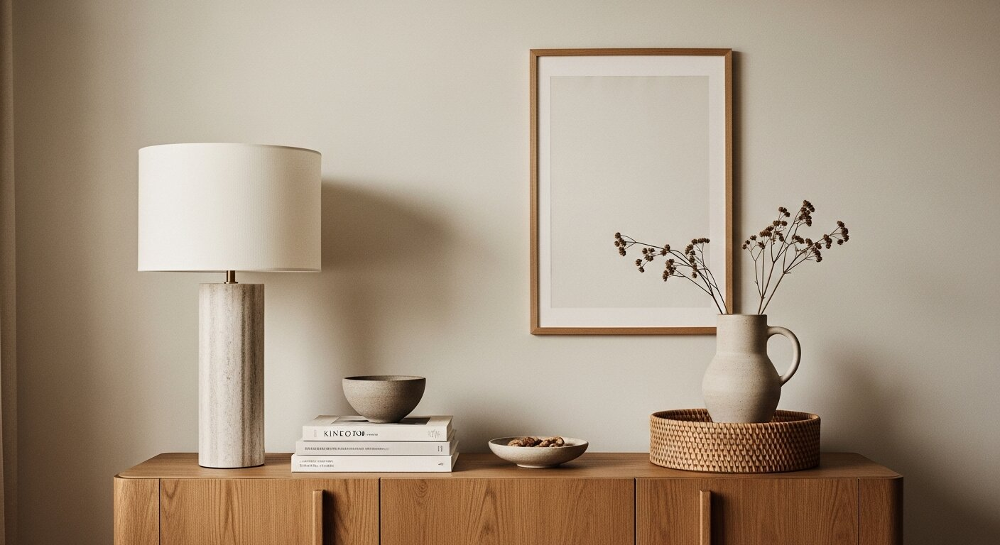
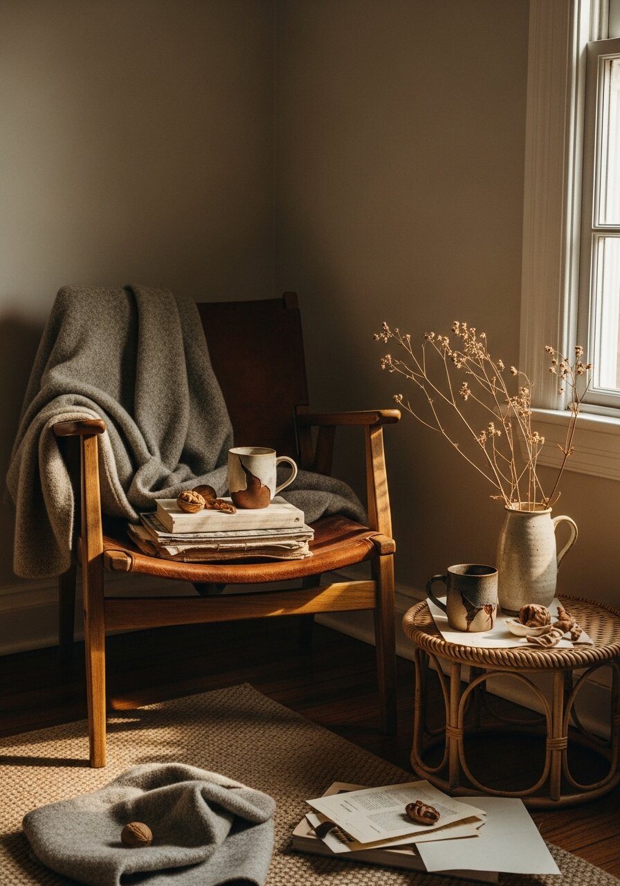
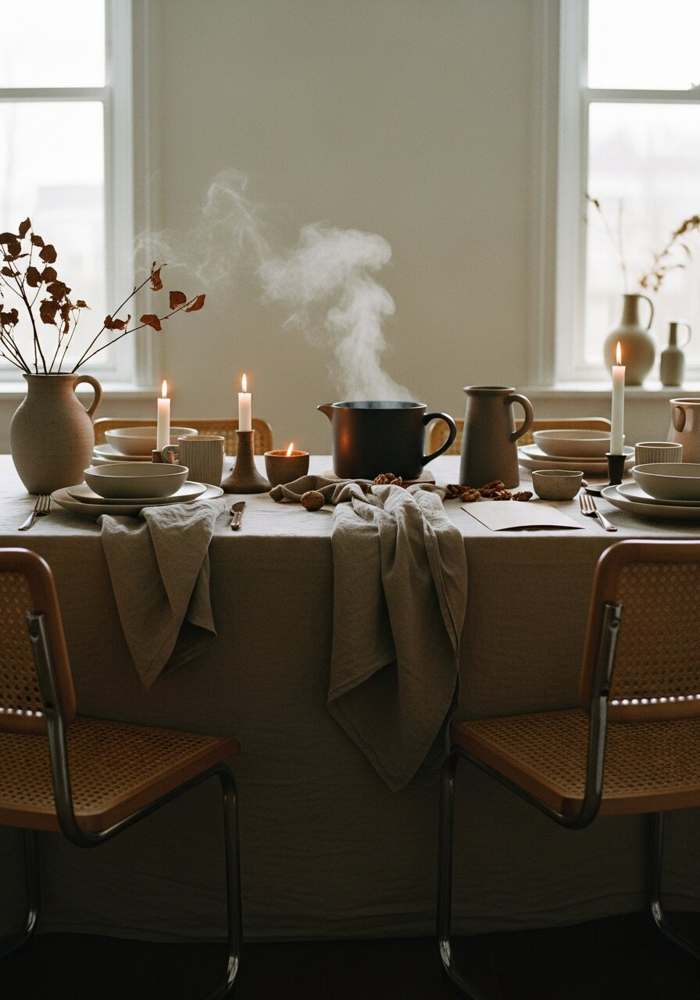
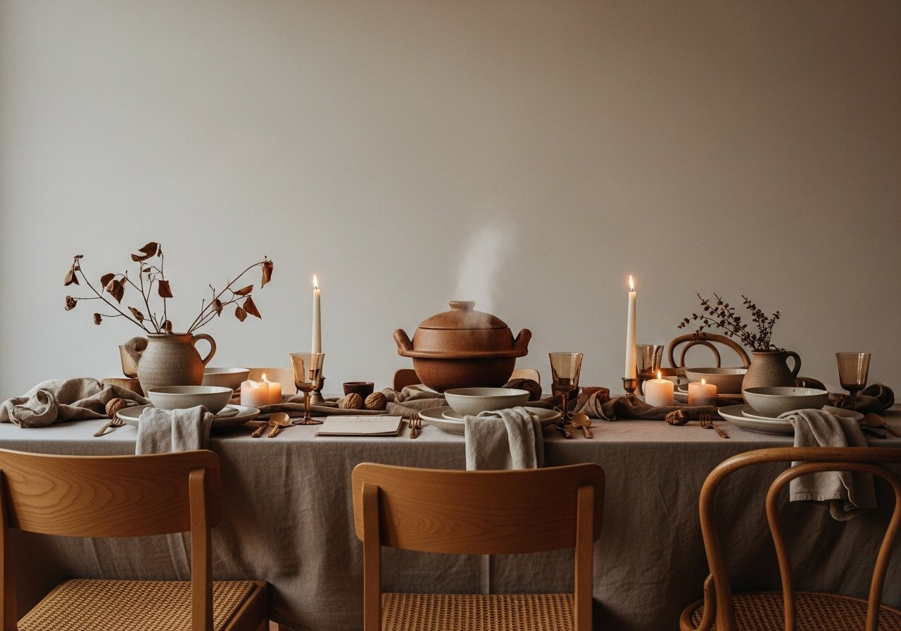
As the dark draws in, the oldest comfort there is becomes the season's ritual: a few people, a warm meal cooked and shared from one pot, low light, and no hurry to be anywhere else.
The Japanese form is the nabe — a one-pot meal cooked at the table in an earthenware donabe, everyone serving themselves from the same steaming centre. It is the most hygge thing in the Japanese kitchen: communal, slow, warm, and entirely without ceremony. You add broth, vegetables, tofu or fish; it simmers in the middle of the table; people talk while it cooks and eat as it's ready. The meal makes itself while the evening happens.
You don't need the exact dish to keep the instinct. The rule is simple: cook something that finishes at the table, or near it, so no one is stuck in the kitchen while everyone else gathers. Light the table low — candles and one warm lamp, nothing overhead. Keep the centre clear enough to see across. And let it run long. The whole point of the autumn gathering is that there is nowhere colder and darker to rush off to.
This is hygge in its true, un-marketed sense: not a product but a practice — warmth, company, and low light held against the season. The most calming room of the year is a full one.
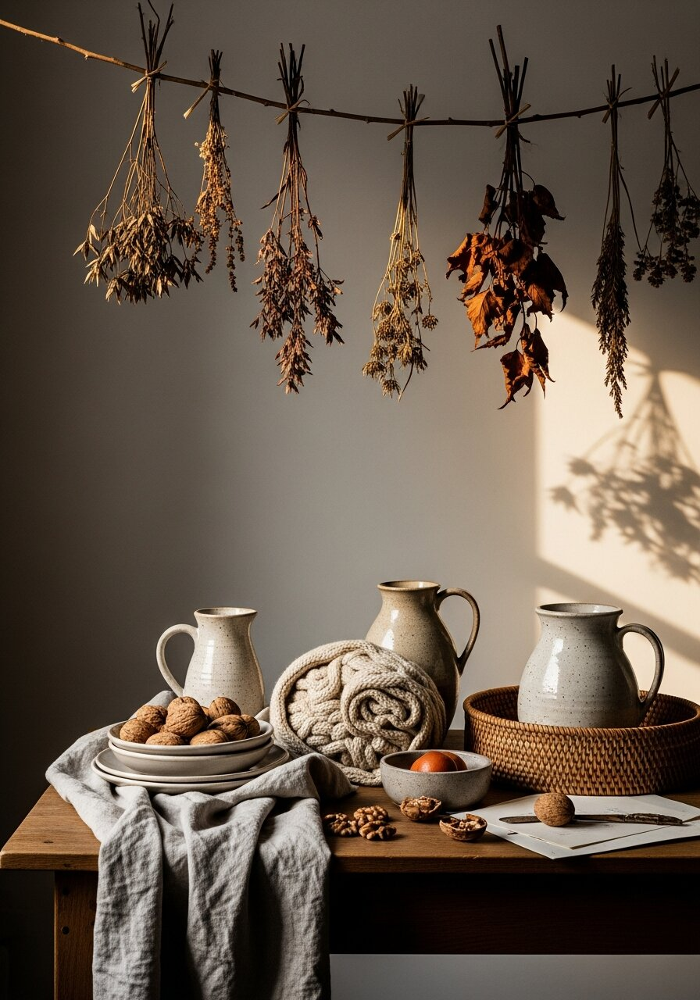
The loveliest autumn ritual costs nothing and lasts all winter: drying the season to keep it. Cut grasses, seed heads, hydrangea, branches of turned leaves at their peak. Bundle the stems loosely, tie them, and hang them upside down in a dim, dry corner for two or three weeks. Hung in the dark, they hold their colour; dried in light, they fade.
Then arrange them as you would a single fresh stem — three, varied in height, in a terracotta vase, with a great deal of air around them. You have made mono no aware into an object you can keep: the season caught at the moment of its turning, held against the dark months. It is the most Japandi thing you can do with a pair of scissors and a quiet corner.
A warm table for a few — stoneware, low light, dried stems, one shared pot — at three budgets. The welcome doesn't change with the price.
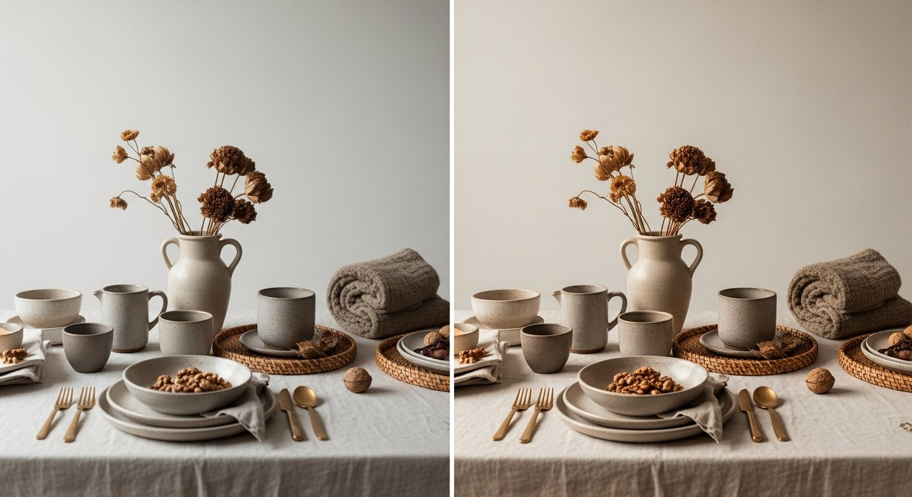
Autumn is the season for the tonal-study prints — the Warm Earth, the Two Woods, the colour fields of terracotta and ochre that echo the very palette of the room. A single tonal print on the wall behind the gathering table holds the season's warmth even by day, and ties the whole composition together.
For the print, the Calm & Oak Collection. For the frame, the new Frames guide — which standard size fits, oak or black, and whether to add a mat to lift it gallery-grade.
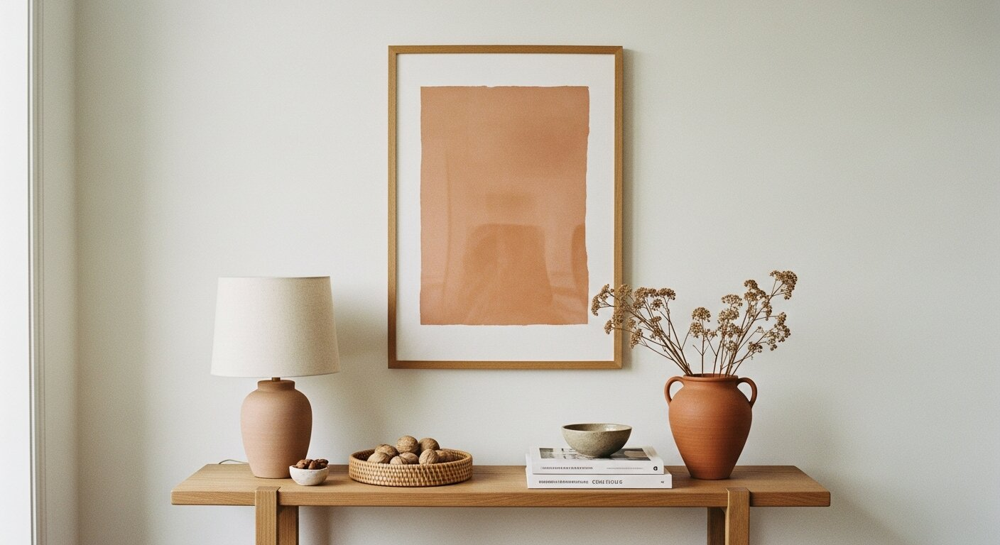
Most of it free. Tear this page out, or don't.
To read. Wabi-Sabi for Artists, Designers, Poets & Philosophers by Leonard Koren — the small, definitive book on the aesthetic of impermanence and imperfection that underlies everything in this issue. An afternoon's read; a lifetime's reference.
To learn. The phrase mono no aware — and then to start seeing it: in the turning leaf, the worn step, the chipped bowl. Once you have the word, the beauty of passing things is everywhere.
To make. A dried arrangement, from page 24 — the season caught and kept through the winter to come.
To notice. The golden hour arriving earlier each evening, and then the first frost. Mark them, as the almanac would. You have now kept your own calendar through a full turn of the year — and that, more than any purchase, is what a calm home is made of.
Each find links to where we'd buy it — chosen for the aesthetic first, the price second, and only ever pieces we'd live with. Where a link leads to a shop, Calm & Oak may earn a small commission if you buy, at no cost to you. It never changes what we choose, only whether the lights here stay on.
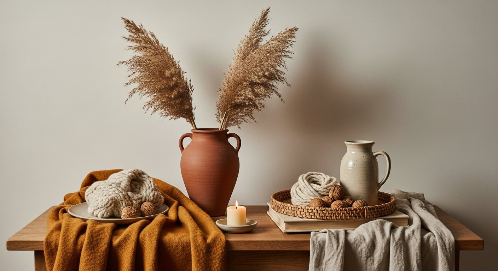
Winter's stillness, spring's clearing, summer's open door, autumn's gathering — one full turn of the calm year, kept the way Japan has kept time for centuries: five days at a time, with attention.
H